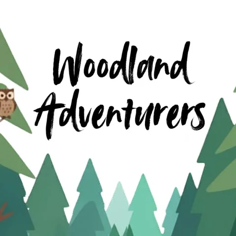

Nature & Family • Rusthall Common
Woodland Adventurers: Free Forest School for Children
Join us for outdoor adventures filled with woodland skills, conservation crafts, wildlife spotting, and hands-on learning about the natural world. Free monthly session for primary-age children (must be accompanied by an adult). Location on What3Words: wobbling.marble.disbelief.